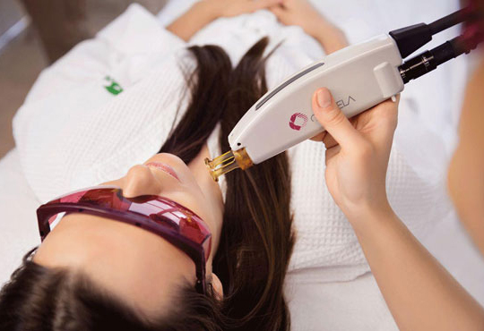
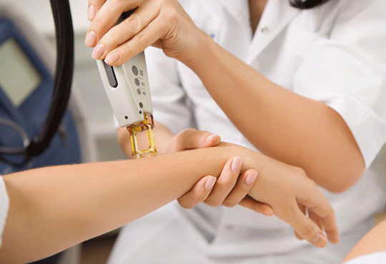
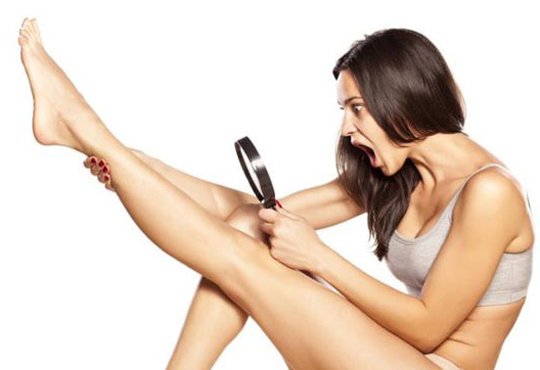
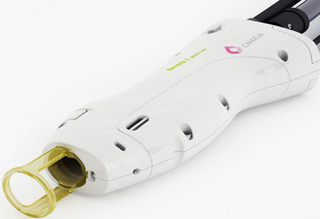
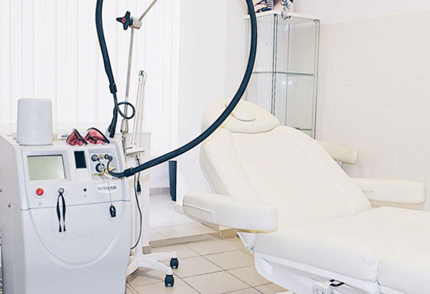

Лазерная эпиляция
Наши опытные врачи - дерматологи работают на лучшем аппарате в мире, с помощью которого возможно удалить нежелательные волосы навсегда! Александритовый лазер для эпиляции марки Candela GentleLase является «золотым стандартом» в современной индустрии красоты. Эффективность аппаратной косметологии определяется в первую очередь используемым для ее проведения устройством. Александритовый лазер Candela достаточно давно используются по всему миру и получил высшие оценки от косметологов и положительные отзывы клиентов. Его главными достоинствами являются высокая мощность, безопасность и безболезненность.
- 
- 
Что предлагает процедура
- Аппарат Candela максимально быстро и эффективно удаляет нежелательные волосы
- Воздействует как на темные, так и на светлые волосы
- Эпиляция возможна даже на смуглой коже, но не при наличии свежего загара (до 2-4 недель)
- Нет врастания волоc и раздражения кожи, как после других методов избавления от волос
- Динамическая система охлаждения избавляет от болезненных ощущений
- Не нужно отращивать волосы, лазер подействует на минимальную длину волоса
Противопоказания
- Нельзя проводить процедуру раньше чем через 2 недели после длительного пребывания на солнце
- Нельзя проводить процедуру за 2 недели до отпуска в жарких странах (пребывание на солнце)
- Пациенты с высокой концентрацией меланина (загоревшие или с темной кожей) попадают в группу с высоким риском возникновения гиперпигментации и ожогов
- Сниженный иммунитет, проявляющийся при простудах или в период обострения хронических заболеваний
- Беременность
- Период кормления грудью
- Открытые раны или
повреждения кожи - Сахарный диабет
- Онкология
- Седые волосы (в связи с отсутствием пигмента в фолликуле волоса, на которые разрушающе действует лазерное излучение)
Инъекционная косметология
Инъекционная косметология является одним из самых популярных направлений эстетической медицины, которая позволяет успешно бороться с различными возрастными изменениями, исправлять врожденные недостатки и подчеркивать достоинства. «Уколы красоты» делают возможным проведение омоложения в максимально короткие сроки, без хирургического вмешательства и длительного восстановительного периода.
Биоревитализация
Биоревитализация гиалуроновой кислотой - это высокоэффективная методика коррекции мелких мимических морщин, позволяющая восстановить тонус, эластичность и цвет, присущие молодой и здоровой коже.
Способ введения гиалуроновой кислоты – подкожные инъекции. Метод является безопасным, а результат, полученный от нескольких сеансов, может продержаться до 6 месяцев. Благодаря этой методике, гиалуроновая кислота проникает глубоко в ткани, увлажняет кожу и ускоряет синтез коллагена.
Курс состоит из 3-5 процедур, с перерывом между процедурами в 2-3 недели.


- - устранении мелких морщин в зоне вокруг глаз, над верхней губой, межбровной складкой;
- - восстановлении упругости кожи подбородка, носогубных складок и щек.
Биоревитализация безопасна даже для самых нежных и чувствительных зон.
Биоревитализация гиалуроновой кислотой показана, когда наблюдается:- - сухость (дегидратация) и дряблость кожи;
- - мелкие морщины;
- - снижение тургора и естественной эластичности;
- - акне и постакне;
- - тусклый цвет кожных покровов.
Ботулинотерапия (ботокс)
Ботулотоксин (ботокс) — нейротоксин белковой природы, вырабатываемый бактериями Clostridium botulinum.
Главный эффект, ради которого женщины пользуются ботулотоксином — это исчезновение морщин.
Часто терапию с токсином проводят для лифтинга (подтяжки) лба, бровей и для коррекции следующих эстетических недостатков:- - складок на шее и декольте;
- - при гиперактивности мимических мышц;
- - мимических морщин в межбровье, на лбу, вокруг глаз;
- - при нарушении овала, контуров лица;
- - асимметрии лица.
Результат пациент может заметить через пару недель. Как правило, достигнутый эффект держится от двух до шести месяцев. Этот срок может продлеваться до 1,5 лет или сокращаться до месяца.

Потливость – естественная реакция человека. Вместе с потом организм старается выводить токсины и соли тяжелых металлов. При этом обильное потоотделение (гипергидроз) может стать серьезной проблемой для человека. Одним из самых популярных методов устранения этой неприятной болезни является ботулинотерапия.
Препарат, содержащий ботулотоксин, за один прием сроком на год снижает концентрацию ацетилхолина, от уровня которого и зависит уровень потоотделения. Благодаря этому, заметно уменьшается потливость подмышек, ладоней, стоп, исчезает неприятный запах. Лечению подлежит локальный (в области ладоней, подмышечных впадин, подошв) гипергидроз.
При потоотделении от коры головного мозга до желез по нервным волокнам поступают импульсы. При введении лекарства, токсин их блокирует на подходе к самой железе и препятствует стимулированию нерва, который отвечает за потоотделение.
Увеличение формы губ
Эстетика губ имеет особое значение для восприятия женского лица. Четко очерченные, объемные губы ассоциируются с молодостью и сексуальностью.
Удачным вариантом для коррекции становится косметологическая процедура по увеличению губ при помощи филлеров, которая параллельно обеспечивает оптимальную степень увлажнённости, а также устраняет морщинки вокруг рта. Известно, что обладательницы пышных губ визуально выглядят моложе. Препарат выбирает врач, в зависимости от того, какие задачи предстоит решить. После введения препарата губы будут выглядеть натурально, в этом и состоят искусство и опыт врача. Уголки губ приподнимаются, кожа губ становится мягкой, упругой и увлажненной.
Процедура выполняется под местной анестезией, пациент имеет возможность наблюдать за проведением процедуры, видит ее результат и может высказывать свои пожелания врачу. Благодаря этому, врач может своевременно внести все необходимые коррективы и добиться результата идеального соответствующего всем требованиям пациента.
Методики введения филеров на основе гиалуроновой кислоты позволяют не только увеличить объем губ, но и исправить их форму, подчеркнуть или даже создать отсутствующий контур губ, добавить недостающие объемы именно там, где это требуется, чтобы добиться желаемой формы губ.
Результат сохраняется на протяжении длительного времени, 8 - 12 месяцев. В течение этого времени препараты рассасываются в ходе обмена веществ в организме. После этого процедура повторяется.
Мезотерапия
Представляет собой малоинвазивный инъекционный метод введения медикаментов внутрикожным путём, в малых дозах, в целях получения фармацевтического эффекта за счет вводимых медикаментов, а также, за счет стимулирующего действия уколов.
Инвазивная процедура — медицинская процедура, связанная с проникновением через естественные внешние барьеры организма (кожа, слизистые оболочки). Примером простейшей инвазивной процедуры является любая инъекция, а самой сложной — хирургическая операция.
Метод проведения мезотерапии основывается на классической технике коротких и неглубоких инъекций с помощью шприца и иглы в нужное место. Препарат в кожу вводится микродозами на глубину не более 5 мм.
- - дерматологические заболевания: акне, гиперпигментация, себорея и др.;
- - патологические состояния, вызванные нарушением системы микроциркуляции в коже: розацеа, купероз, отеки и др.;
- - целлюлит и локальные жировые отложения (липолитическая мехотерапия);
- - возрастные изменения кожи и повреждения, обусловленные воздействием ультрафиолета;
- - различные дефекты кожи: рубцы, стрии;
- - лечение болевого синдрома;
- - лечение стресса.
Преимущества мезотерапии заключаются в ее относительной безопасности, малоинвазивности, а также в быстром эффекте.
Наше оборудование
Александритовый лазер Candela GentleLase – это самый известный и широко используемый лазер в мире. Он снабжен уникальной системой, охлаждающей кожу криогенном, благодаря которой пациенты не испытывают во время процедур никаких неприятных ощущений. Candela GentleLase за один импульс обрабатывает пятно максимального диаметра, равного 18 миллиметрам. Это больше, чем при использовании остальных лазерных эпиляторов. Благодаря наличию в приборе инновационной системы охлаждения кожных покровов, при его применении врачу не приходится покрывать кожу пациента гидрогелем, что сокращает время, затрачиваемое на проведение процедуры.
- 
- 
Наши специалисты
Врач-косметолог, специалист по:
- - лазерной терапии;
- - контурной пластике;
- - иньекционной косметологии;
- - биоревитализации;
- - коррекции фигуры;
- - RF-лифтингу.
Образование:
- 2015 г. – факультет лечебного дела Первого Московского Государственного Медицинского Университета им. И. М. Сеченова.
- 2016 г. – кафедра кожных и венерический заболеваний Первого Московского Государственного Медицинского Университета им. И.М. Сеченова. Специальность – дерматовенерология.
- 2016 г. – факультет усовершенствования врачей Московского областного научно-исследовательского клинического института им. М. Ф. Владимирского. Специальность – косметология
Абрамова
Ксения Андреевна